UCAB 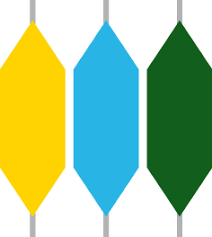 UNIVERCIDAD CATOLICA ANDRES BELLO
Informacion institucional Pregrado Posgrado Ciap Y Academias Investigacion Cultura y vida univercitari Sedes El cultivista
.jpg)
.png)
.png) 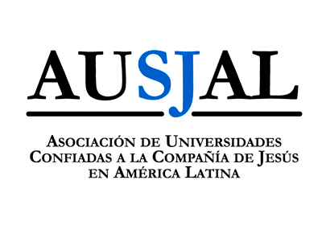
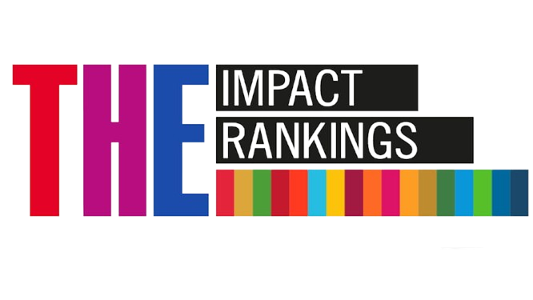
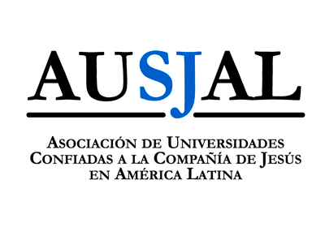
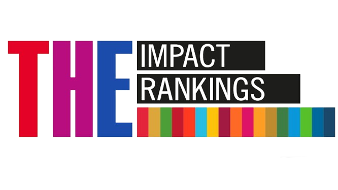
IMPORTANTE
PRUEBA DE CONOCIMIENTOS PARA PREGRADO
La próxima Prueba de Conocimientos para el ingreso en la UCAB se realizará el sábado 01 de noviembre de 2025.
IMPORTANTE
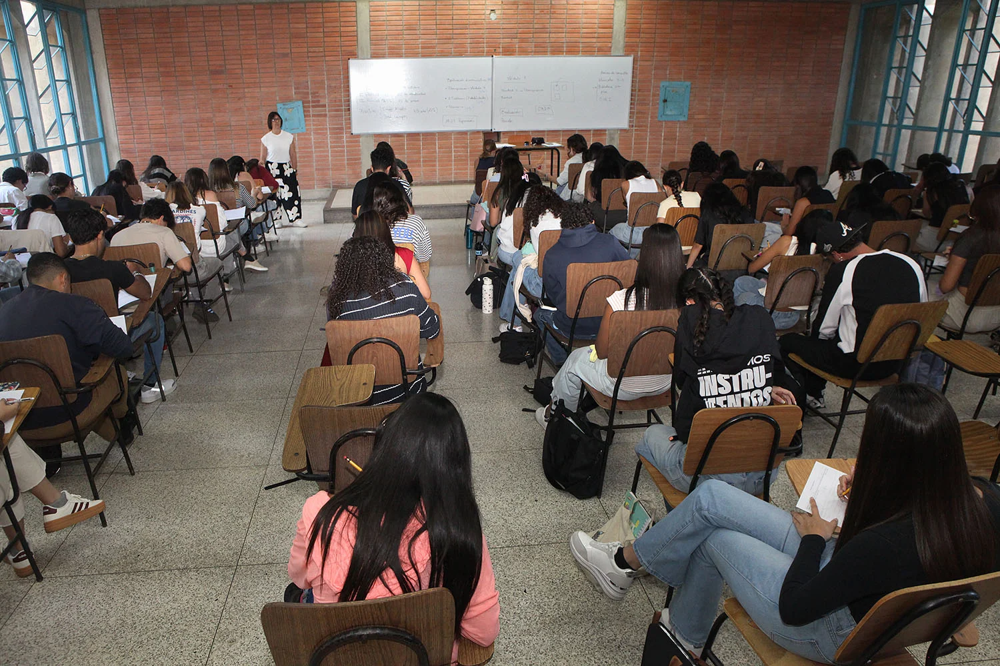CONSULTA EL CALENDARIO ACAEMICO AQUI no pierdas de vista las fechas
ABIERTAS LAS PREINSCRIPCIONES PARA POSTGRADO
Del 13 de octubre al 01 de diciembre de 2025 son las preinscripciones de postgrado. Consulta la oferta de programas semestrales y trimestrales y haz tu solicitud de ingreso en línea.
VER MAS INFORMACION
PRUEBA DE CONOCIMIENTOS
Este sábado 01 de noviembre de 2025 es la prueba de conocimientos para ingresar en la UCAB. Consulta toda la información que debes saber, así como la Guía de Aplicación de la prueba, para que estés preparado para este reto.
VER MAS INFOEMAICON
HERRAMIENTAS PARA TU VIDA PROFESIONAL
Tenemos diversos programas de estudios actualizados, que te permitirán vivir una experiencia académica y práctica única. Desarrollarás habilidades y competencias para estar al día con las nuevas tendencias del mercado laboral.

Tenemos diversos programas de estudios actualizados, que te permitirán vivir una experiencia académica y práctica única. Desarrollarás habilidades y competencias para estar al día con las nuevas tendencias del mercado laboral.
La UCAB te ofrece una oferta académica de pregrado reconocida por su excelencia, con carreras que abarcan las áreas humanísticas, económicas, sociales, jurídicas e ingeniería.
QUIERO SER UCABISTA
CURSA UN POSTGRADO EN LA UCAB
Si buscas potenciar tu curriculum profesional con nuevos conocimientos en un área particular, te invitamos a consultar nuestra oferta académica de estudios de tercer nivel.
QUIERO SABER MASSECRETARÍA
MATRÍCULA
Conoce el paso a paso de tu inscripción administrativa.
MatrículaAPOYO ECONÓMICO
La UCAB tiene diversos programas de ayuda económica para sus estudiantes.
apoyo económicoSECRETARÍA
Ten a la mano todos los servicios que brinda Secretaría.
SecretaríaRealiza los procesos académico-administrativos a través de Secretaría en Línea.
Secretaría en líneaSECRETARIADO DE INTERNACIONALIZACIÓN

¿Aún no conoces el Programa Internacional de Intercambio Académico? Entérate de todos los detalles.
ME INTERESAUNIVÉRSATE
Mantente al tanto de todo lo que está pasando en la comunidad universitaria venezolana. Escucha el último programa radial aquí:
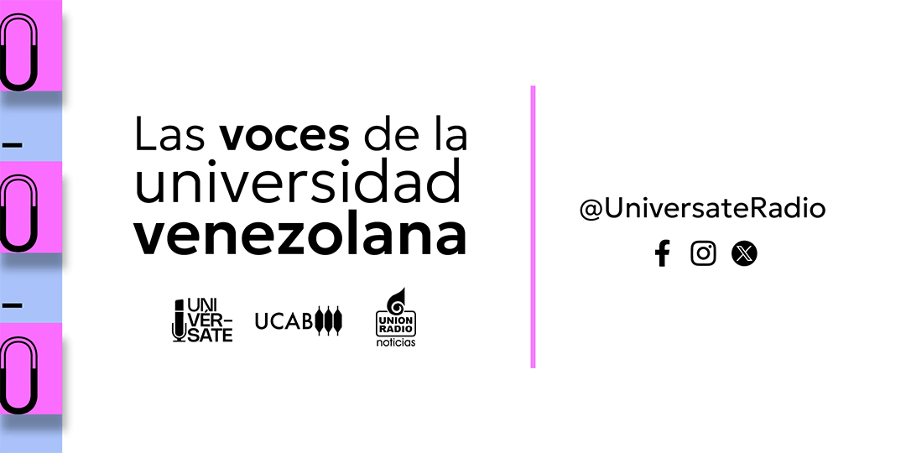 ¡SOMOS UNIVÉRSATE!CENTRO DE ESTUDIOS POLÍTICOS Y DE GOBIERNO
Conoce los programas académicos de formación ciudadana y actualización profesional, para la capacitación de servidores públicos.
ME INTERESA¿Necesitas soporte en algún área?
CANALES DE CONTACTO
Aquí encontrarás los datos de las Escuelas, Unidades de Apoyo y dependencias administrativas de la UCAB.
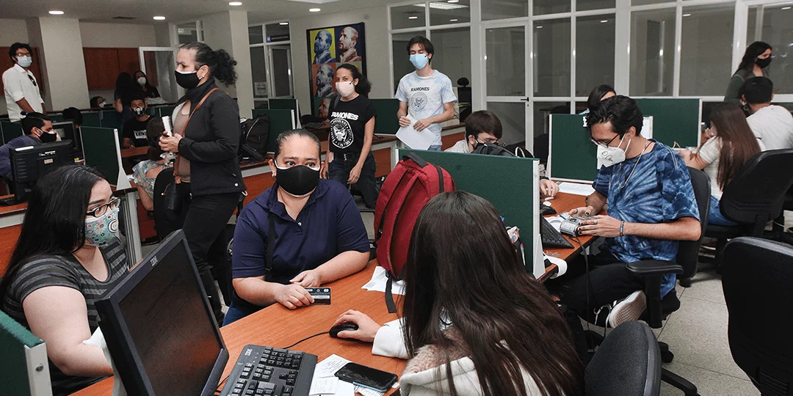ASISTENCIA ACADÉMICO- ADMINISTRATIVA
Conecta con las distintas dependencias de la UCAB.
COMUNICATE AQUÍ 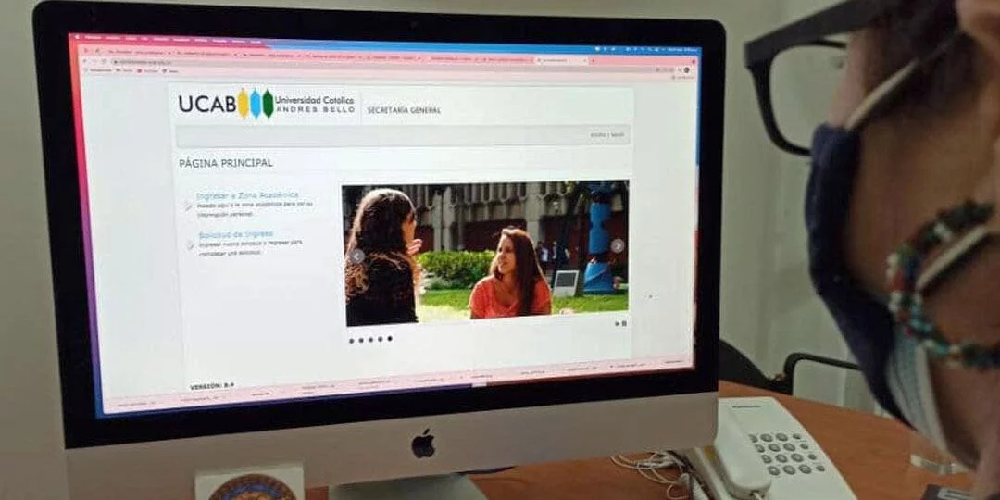ASISTENCIA TÉCNICA
¿Necesitas soporte técnico en las plataformas de la UCAB? Encuentra aquí la ayuda que buscas.
COMUNICATE AQUÍ 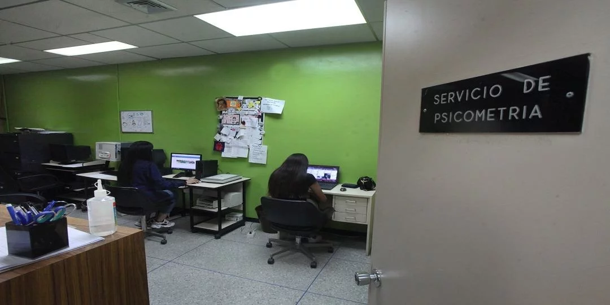ASESORAMIENTO PSICOLÓGICO
Te brindamos apoyo y guía para que te adaptes a la vida universitaria.
COMUNICATE AQUÍ 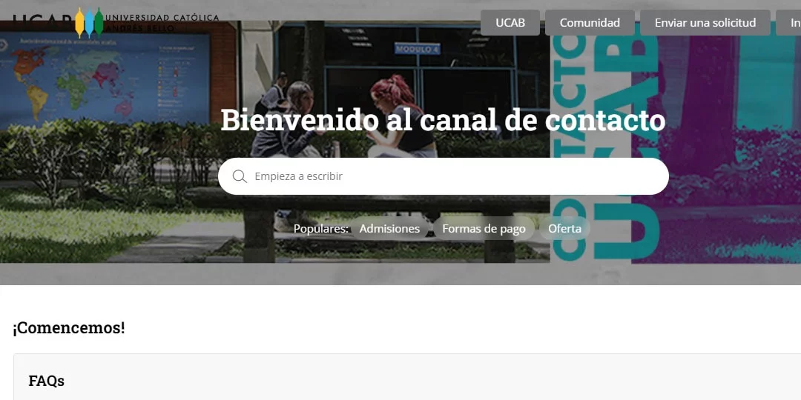RECLAMOS Y SUGERENCIAS
Queremos saber su opinión. Envíenos sus ideas, reclamos y/o propuestas.
COMUNICATE AQUÍ